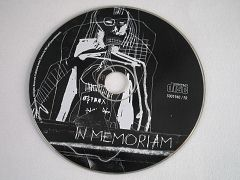
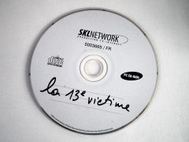

L'ICPA est une association privée créée par des amis et des collègues du journaliste Jack Lorski au lendemain de l'annonce de son meurtre en Écosse. Son seul but est d'aider les services de police et de justice internationaux à mettre fin le plus tôt possible aux agissements criminels du Phoenix.
SKL NETWORK est l'agence qui employait Jack Lorski. Elle a reçu et rendu public les deux CD-Roms envoyés par le Phoenix.
LIBERATION.FR a publié plusieurs articles sur l'affaire du Phoenix. Utilisez son moteur de recherches pour accéder à ses archives.
LES CD-ROMS ENVOYÉS PAR LE PHOENIX
En créant deux cd-roms contenant des énigmes qui livrent des indices au compte-gouttes et en jouant sans cesse à cacher ou à crypter les rares informations qu'il consent à donner, le Phoenix nous a montré qu'il adorait manipuler les gens, en particulier ceux qui le recherchent. La performance technique et l'habileté graphique avec lesquelles il a conçu ses programmes nous ont prouvé sa grande intelligence. Comme l'a indiqué David Marcus dans ses analyses, à travers ses « oeuvres », le Phoenix, conscient de son génie, recherche une forme de reconnaissance, ce qui est une constante chez de nombreux serial killers.
- Le CD-ROM noir
Le 8 octobre 2003, soit plus de huit mois après l'enlèvement de Jack Lorski et de Karen Gijman, Arnaud Ivan, président de SKL Network, reçoit à son domicile une enveloppe postée à Bologne (Italie) contenant un CD-ROM noir très étrange apparemment conçu comme un jeu.
Désarmés devant ce programme qu'ils n'arrivent pas à décrypter, la police et la direction de SKL décident de le rendre public (Photo 1) afin de multiplier les chances de trouver à l'intérieur des indices qui pourraient les mettre sur la piste des kidnappés et leur permettre d'arrêter le ravisseur.
Peu de temps après cette diffusion, de nombreux enquêteurs amateurs participent à la résolution des nombreuses énigmes contenues dans le CD-ROM, ils permettent ainsi à la police italienne de libérer Jack et Karen quelques temps plus tard. Malheureusement, ils n'obtiennent pas suffisamment d'indices pour permettre l'arrestation du Phoenix.
- Le CD-ROM blanc
Le 2 octobre 2004, Arnaud Ivan reçoit dans sa boite aux lettres une deuxième enveloppe ressemblant étrangement à celle qu'il avait reçue un an auparavant. Elle contient cette fois-ci un CD-ROM blanc. Les analyses effectuées par la police prouvent que ce nouveau document est bien l'oeuvre du Phoenix. Le premier film révélé par ce CD-ROM fait référence à Alex Borgo, un jeune journaliste français décédé en février 2004.
Comme pour le CD-ROM noir, SKL et Gerd Hanke, le policier allemand qui coordonne l'enquête sur le Phoenix au niveau européen, décident de le diffuser au grand public (Photo 2) afin d'accélérer son décryptage, et comme la première fois, les enquêteurs privés réussissent à résoudre une à une les énigmes contenues dans le CD-ROM. Leurs recherches prouvent qu'Alex Borgo ne s'est pas suicidé mais qu'il a été assassiné par le Phoenix car celui-ci ne voulait pas que le journaliste publie les résultats de son enquête sur Manus Domini. Malheureusement, une fois encore, les indices récoltés au cours de cette enquête sont trop maigres pour permettre à la police d'arrêter le tueur.